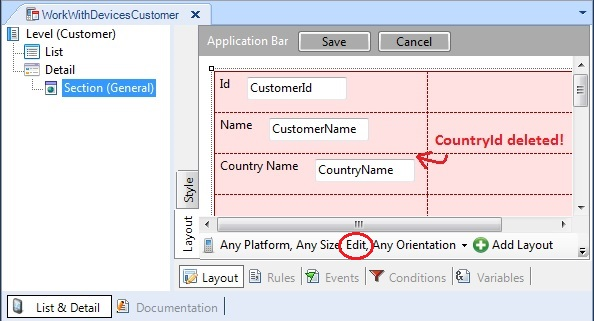
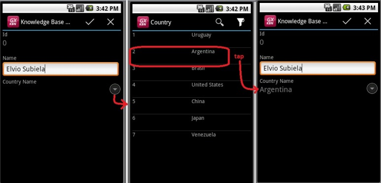

Prompts are visible to the right of the FK attribute by default. But, what if, for instance, in the Edit Layout of the (General)Section node of the WorkWithDevices<transaction> we do not show the FK attribute to prevent the user from handling an internal identifier so that he works with the description directly? Obviously, the prompt will not be activated. For the prompt to be activated on the describer attribute (inferred), we will have to program it! For instance, we delete CountryId from WorkWithDevicesCustomer/(General)Section Edit mode:  Also, we want the prompt enabled on CountryName:  And how do we program the invocation to the prompt on the CountryName attribute? With the rule:
prompt( Gx0020sd, CountryId ) on CountryName;
More here. This rule allows invoking, on the control mentioned after “on”, a system (web/win/sd) or user (that of the modified system) prompt. The same happens with any object (work/web/sd panel) created from scratch meant to function as a selection list. To find out how to create an SD panel from scratch that functions as a prompt, read: HowTo: Create a User Prompt from scratch in Smart Devices It is important to point out that invoking a web/work/sd panel with the prompt rule allows the user to select a value from a modal dialogue.
|
| Backlinks |
| Selection Lists |